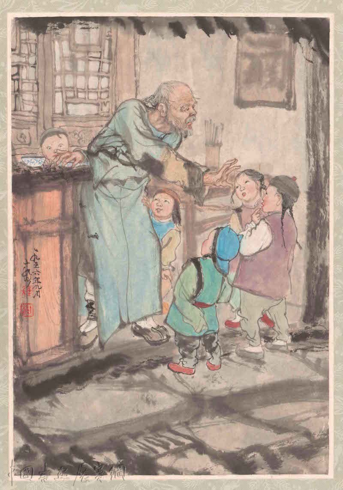
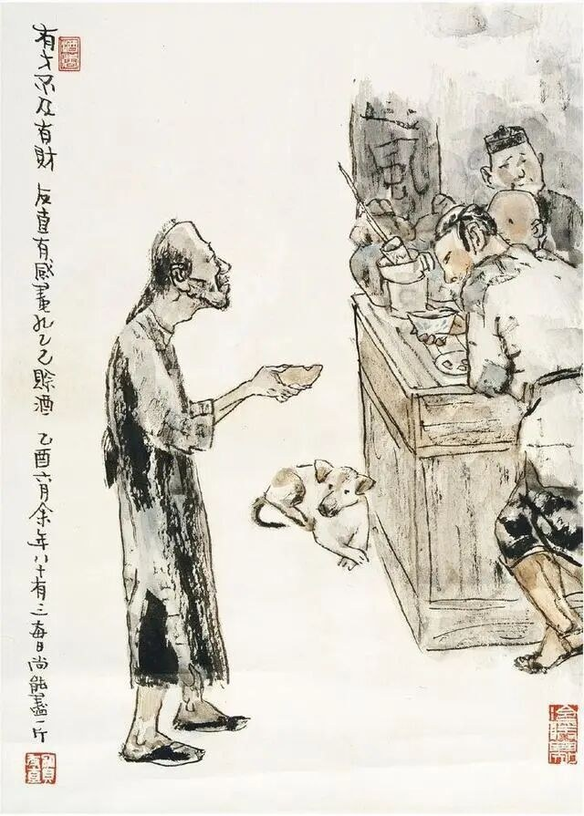

鲁镇的酒店的格局，是和别处不同的：都是当街一个曲尺形的大柜台，柜里面预备着热水，可以随时烫酒。做工的人，傍午傍晚散了工，每每花四文铜钱，买一碗酒，——这是二十多年前的事，现在每碗要涨到十文，——靠柜外站着，热热的喝了休息；倘肯多花一文，便可以买一碟盐煮笋，或者茴香豆，做下酒物了，如果出到十几文，那就能买一样荤菜，但这些顾客，多是短衣帮，大抵没有这样阔绰。只有穿长衫的，才踱进店面隔壁的房子里，要酒要菜，慢慢地坐喝。
我从十二岁起，便在镇口的咸亨酒店里当伙计，掌柜说，样子太傻，怕侍候不了长衫主顾，就在外面做点事罢。外面的短衣主顾，虽然容易说话，但唠唠叨叨缠夹不清的也很不少。他们往往要亲眼看着黄酒从坛子里舀出，看过壶子底里有水没有，又亲看将壶子放在热水里烫着，然后放心：在这严重监督之下，羼水也很为难。所以过了几天，掌柜又说我干不了这事。幸亏荐头的情面大，辞退不得，便改为专管烫酒的一种无聊职务了。
我从此便整天的站在柜台里，专管我的职务。虽然没有什么失职，但总觉得有些单调，有些无聊。掌柜是一副凶脸孔，主顾也没有好声气，教人活泼不得；只有孔乙己到店，才可以笑几声，所以至今还记得。
孔乙己是站着喝酒而穿长衫的唯一的人。他身材很高大；青白脸色，皱纹间时常夹些伤痕；一部乱蓬蓬的花白的胡子。穿的虽然是长衫，可是又脏又破，似乎十多年没有补，也没有洗。他对人说话，总是满口之乎者也，教人半懂不懂的。因为他姓孔，别人便从描红纸[1]上的“上大人孔乙己”这半懂不懂的话里，替他取下一个绰号，叫作孔乙己。孔乙己一到店，所有喝酒的人便都看着他笑，有的叫道，“孔乙己，你脸上又添上新伤疤了！”他不回答，对柜里说，“烫两碗酒，要一碟茴香豆。”便排出九文大钱。他们又故意的高声嚷道，“你一定又偷了人家的东西了！”孔乙己睁大眼睛说，“你怎么这样凭空污人清白……”“什么清白？我前天亲眼见你偷了何家的书，吊着打。”孔乙己便涨红了脸，额上的青筋条条绽出，争辩道，“窃书不能算偷……窃书！……读书人的事，能算偷么？”接连便是难懂的话，什么“君子固穷”[2]，什么“者乎”之类，引得众人都哄笑起来：店内外充满了快活的空气。
听人家背地里谈论，孔乙己原来也读过书，但终于没有进学[3]，又不会营生；于是愈过愈穷，弄到将要讨饭了。幸而写得一笔好字，便替人家钞钞书，换一碗饭吃。可惜他又有一样坏脾气，便是好喝懒做。坐不到几天，便连人和书籍纸张笔砚，一齐失踪。如是几次，叫他钞书的人也没有了。孔乙己没有法，便免不了偶然做些偷窃的事。但他在我们店里，品行却比别人都好，就是从不拖欠；虽然间或没有现钱，暂时记在粉板上，但不出一月，定然还清，从粉板上拭去了孔乙己的名字。
孔乙己喝过半碗酒，涨红的脸色渐渐复了原，旁人便又问道，“孔乙己，你当真认识字么？”孔乙己看着问他的人，显出不屑置辩的神气。他们便接着说道，“你怎的连半个秀才也捞不到呢？”孔乙己立刻显出颓唐不安模样，脸上笼上了一层灰色，嘴里说些话；这回可是全是之乎者也之类，一些不懂了。在这时候，众人也都哄笑起来：店内外充满了快活的空气。
在这些时候，我可以附和着笑，掌柜是决不责备的。而且掌柜见了孔乙己，也每每这样问他，引人发笑。孔乙己自己知道不能和他们谈天，便只好向孩子说话。有一回对我说道，“你读过书么？”我略略点一点头。他说，“读过书，……我便考你一考。茴香豆的茴字，怎么写的？”我想，讨饭一样的人，也配考我么？便回过脸去，不再理会。孔乙己等了许久，很恳切的说道，“不能写罢？……我教给你，记着！这些字应该记着。将来做掌柜的时候，写账要用。”我暗想我和掌柜的等级还很远呢，而且我们掌柜也从不将茴香豆上账；又好笑，又不耐烦，懒懒的答他道，“谁要你教，不是草头底下一个来回的回字么？”孔乙己显出极高兴的样子，将两个指头的长指甲敲着柜台，点头说，“对呀对呀！……回字有四样写法[4]，你知道么？”我愈不耐烦了，努着嘴走远。孔乙己刚用指甲蘸了酒，想在柜上写字，见我毫不热心，便又叹一口气，显出极惋惜的样子。
有几回，邻舍孩子听得笑声，也赶热闹，围住了孔乙己。他便给他们茴香豆吃，一人一颗。孩子吃完豆，仍然不散，眼睛都望着碟子。孔乙己着了慌，伸开五指将碟子罩住，弯腰下去说道，“不多了，我已经不多了。”直起身又看一看豆，自己摇头说，“不多不多！多乎哉？不多也[5]。”于是这一群孩子都在笑声里走散了。
孔乙己是这样的使人快活，可是没有他，别人也便这么过。

有一天，大约是中秋前的两三天，掌柜正在慢慢的结账，取下粉板，忽然说，“孔乙己长久没有来了。还欠十九个钱呢！”我才也觉得他的确长久没有来了。一个喝酒的人说道，“他怎么会来？……他打折了腿了。”掌柜说，“哦！”“他总仍旧是偷。这一回，是自己发昏，竟偷到丁举人家里去了。他家的东西，偷得的么？”“后来怎么样？”“怎么样？先写服辩[6]，后来是打，打了大半夜，再打折了腿。”“后来呢？”“后来打折了腿了。”“打折了怎样呢？”“怎样？……谁晓得？许是死了。”掌柜也不再问，仍然慢慢的算他的账。

中秋过后，秋风是一天凉比一天，看看将近初冬；我整天的靠着火，也须穿上棉袄了。一天的下半天，没有一个顾客，我正合了眼坐着。忽然间听得一个声音，“烫一碗酒。”这声音虽然极低，却很耳熟。看时又全没有人。站起来向外一望，那孔乙己便在柜台下对了门槛坐着。他脸上黑而且瘦，已经不成样子；穿一件破夹袄，盘着两腿，下面垫一个蒲包，用草绳在肩上挂住；见了我，又说道，“烫一碗酒。”掌柜也伸出头去，一面说，“孔乙己么？你还欠十九个钱呢！”孔乙己很颓唐的仰面答道，“这……下回还清罢。这一回是现钱，酒要好。”掌柜仍然同平常一样，笑着对他说，“孔乙己，你又偷了东西了！”但他这回却不十分分辩，单说了一句“不要取笑！”“取笑？要是不偷，怎么会打断腿？”孔乙己低声说道，“跌断，跌，跌……”他的眼色，很像恳求掌柜，不要再提。此时已经聚集了几个人，便和掌柜都笑了。我热了酒，端出去，放在门槛上。他从破衣袋里摸出四文大钱，放在我手里，见他满手是泥，原来他便用这手走来的。不一会，他喝完酒，便又在旁人的说笑声中，坐着用这手慢慢走去了。
自此以后，又长久没有看见孔乙己。到了年关，掌柜取下粉板说，“孔乙己还欠十九个钱呢！”到第二年的端午，又说“孔乙己还欠十九个钱呢！”到中秋可是没有说，再到年关也没有看见他。
我到现在终于没有见——大约孔乙己的确死了。
一九一九年三月[7]